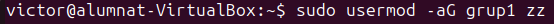
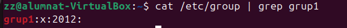
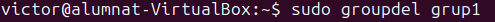
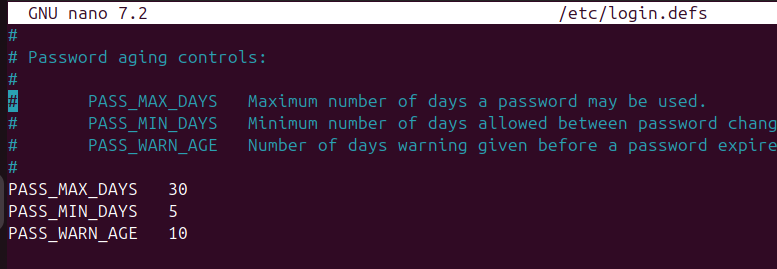

SPRINT 2
Sistema Opertatiu Ubuntu
Afegir usuaris
Per afegir un usuari al sistema, es poden utilitzar dues comandes: adduser i useradd. La diferència principal és que adduser és una versió més amigable i interactiva de useradd, que generalment és més bàsica i directa.
Comanda adduser
La comanda adduser és una versió més avançada i automàtica per crear usuaris. Aquesta comanda crea l'usuari, el seu directori personal i altres fitxers de configuració necessaris. Exemple per crear un usuari anomenat josep:
sudo adduser josep

Comanda useradd
La comanda useradd és més simple i requereix més configuració manual. Aquesta comanda només crea l'usuari, però no crea un directori personal ni altres fitxers.
sudo useradd -m -s /bin/bash josep

L'opció -m crea el directori personal de l'usuari.
L'opció -s especifica la shell (per exemple, /bin/bash).
Comprovació quan es creen els usuaris
- Directori personal: /home/josep
- Grup d'usuari: el grup josep
- Arxius de configuració: .bashrc, .profile, etc.
Eliminar usuaris
Per eliminar un usuari, es poden utilitzar les comandes deluser o userdel.
Comanda deluser
Per eliminar un usuari amb deluser, utilitza: sudo deluser josep

Aquesta comanda elimina l'usuari del sistema, però no elimina el seu directori personal. Si vols eliminar també el directori personal, utilitza:
sudo deluser --remove-home josep

Comanda userdel
Per eliminar un usuari amb userdel: sudo userdel josep Si vols eliminar també el directori personal, pots afegir l'opció -r: sudo userdel -r josep
Personalització de les comandes adduser i useradd Personalització de useradd La comanda useradd es pot personalitzar editant el fitxer de configuració /etc/default/useradd. Algunes de les opcions que es poden modificar inclouen:
- HOME: Configura el directori personal per defecte.
- SHELL: Configura la shell per defecte per als usuaris nous.
- GROUP: Configura si els usuaris seran creats amb un grup separat o assignats a un grup preexistent.
Creació i configuració de grups
Crear un grup nou:
sudo groupadd nom_grup

Afegir un usuari existent a un grup:
sudo usermod -aG nom_grup usuari_nom
 
Eliminar un grup:
sudo groupdel nom_grup

Configuració de polítiques de contrasenyes
sudo nano /etc/login.defs

PASS_MAX_DAYS: Màxim de dies per canviar la contrasenya.
PASS_MIN_DAYS: Mínim de dies abans de poder canviar la contrasenya.
PASS_MIN_LEN: Longitud mínima de la contrasenya.
PASS_WARN_AGE: Dies d'advertència abans de la caducitat.
Llistes de control d'accés
Les llistes de control d'accés (ACL) permeten especificar permisos addicionals per a usuaris o grups sobre fitxers i directoris
Afegeix permisos d'escriptura a un usuari concret
setfacl -m u:usuari:w fitxer.txt
Afegeix permisos de lectura a un grup
setfacl -m g:grup:r fitxer.txt
Elimina permisos d'un usuari concret
setfacl -x u:usuari fitxer.txt
Visualitzar ACL existents
getfacl fitxer.txt
Casos d'ús habituals
- Donar accés addicional a usuaris sense canviar el propietari ni el grup del fitxer.
- Configurar permisos predeterminats per als nous fitxers dins d'un directori compartit.
- Gestionar accés granular en entorns multiusuari.
Màscara de permisos umask
La màscara de permisos umask utilitza tres dígits octals, cada un dels quals representa els permisos per a l'usuari, el grup i altres usuaris, respectivament. Els tres dígits són valors entre 0 i 7, que es poden desglossar així:
- 0: Permís complet (lectura, escriptura i execució).
- 1: Permís només d'execució.
- 2: Permís només d'escriptura.
- 3: Permís d'escriptura i execució.
- 4: Permís només de lectura.
- 5: Permís de lectura i execució.
- 6: Permís de lectura i escriptura.
- 7: Sense permisos (el màxim bloqueig).
Per a què serveix umask
La umask defineix quins permisos no es concediran de manera predeterminada quan es creen nous fitxers o directoris. Funciona invertint els bits dels permisos. Per exemple, si la umask està configurada a 022:
- Permisos per defecte:
Fitxers: 666 (lectura i escriptura per a tots) Directoris: 777 (lectura, escriptura i execució per a tots)
- Resultat aplicant la umask:
Amb umask 022, els permisos restants seran 644 per a fitxers (rw-r--r--) i 755 per a directoris (rwxr-xr-x).
Canvi temporal a un altre usuari
Per canviar temporalment a un altre usuari en un terminal, es fa servir la comanda su.
`su - nom_usuari
Canvi definitiu del umask
Perquè el canvi sigui permanent, cal editar els fitxers de configuració de l'usuari:
Editar .bashrc
umask 027
Aplica els canvis Guarda el fitxer i carrega els canvis amb:
source ~/.bashrc
Què és un procés?
Un procés és un programa en execució al sistema operatiu. Es tracta d’una instància d’un programa que inclou el codi executable, l’estat, les dades, les variables, i altres recursos necessaris per a la seva execució (memòria, descriptors de fitxers, etc.).
Els processos poden ser:
- Actius (Running): En execució o en espera de recursos.
- Bloquejats (Blocked): Esperant una acció externa.
- Suspesos o Zombies: Processos parats o finalitzats, però que encara ocupen recursos del sistema.
Comanda top
top mostra en temps real una llista dels processos actius al sistema amb informació sobre el consum de recursos, com la CPU i la memòria.
Principals camps:
PID: Identificador del procés.
USER: Usuari que executa el procés.
%CPU: Percentatge d’ús de CPU.
%MEM: Percentatge d’ús de memòria.
TIME+: Temps total de CPU utilitzat pel procés.
COMMAND: Nom de l’executable o comanda.
Comanda pstree
pstree mostra els processos en un format d’arbre jeràrquic, il·lustrant com estan relacionats els processos entre si (processos pares i fills).
Paràmetres útils:
- -p: Mostra els PIDs al costat de cada procés.
pstree -p
- -u: Mostra els noms dels usuaris associats als processos.
pstree -u
- -a: Mostra els arguments de les comandes dels processos.
pstree -a
Comanda ps aux
Mostra una llista dels processos actius al sistema amb informació detallada.
ps aux
- a: Mostra tots els processos d'usuaris.
- u: Inclou informació detallada com usuari, consum de CPU i memòria.
- x: Mostra processos que no estan associats a cap terminal.
Comanda jobs
Mostra la llista dels processos que s’executen en segon pla (background) o que estan suspesos a la sessió actual.
Resultat habitual:
[1]+ Stopped ./script.sh
Comanda fg
Per reprendre un procés suspès o que s'executa en segon pla.
fg %1
Comanda kill
S'utilitza per enviar senyals als processos per gestionar-los.
kill -9 PID
-
-9: Envia el senyal SIGKILL, que força la terminació immediata del procés.
-
PID: Identificador del procés a finalitzar (obtingut amb ps aux o top).
Si tens un procés amb PID 1234 que vols matar:
kill -9 1234